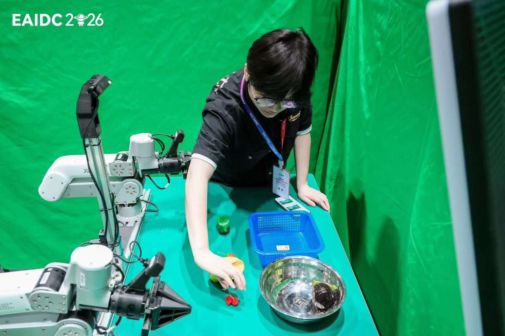
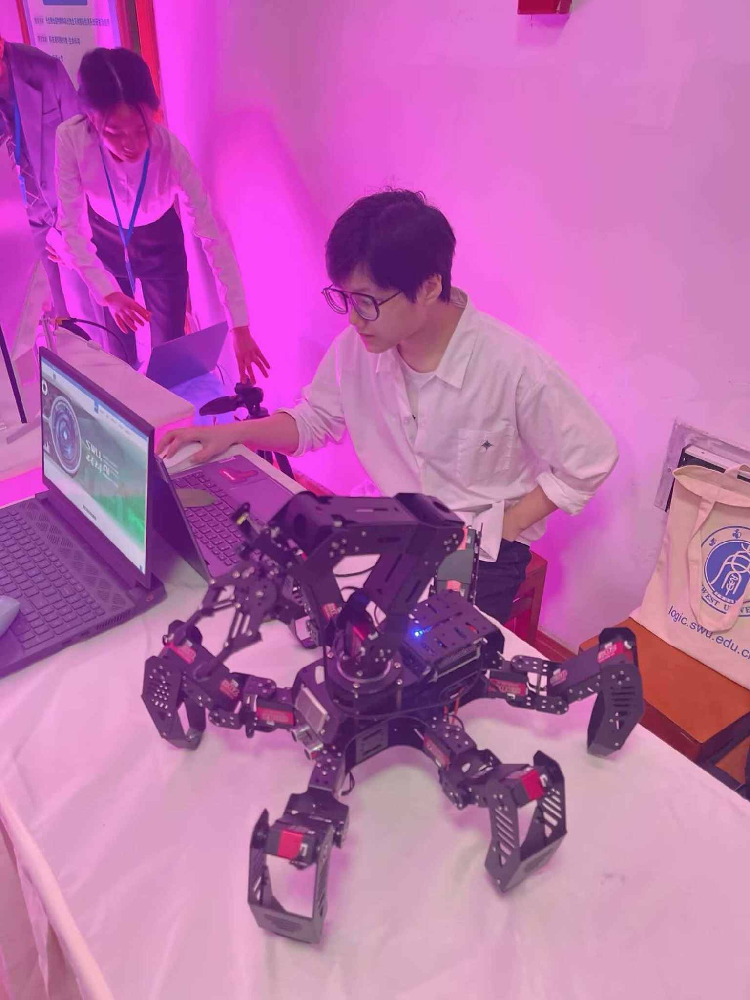
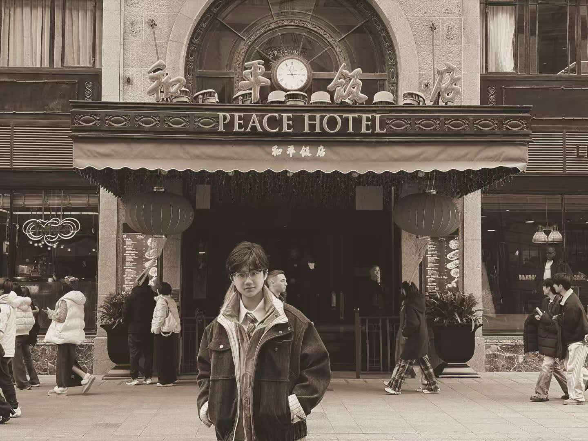
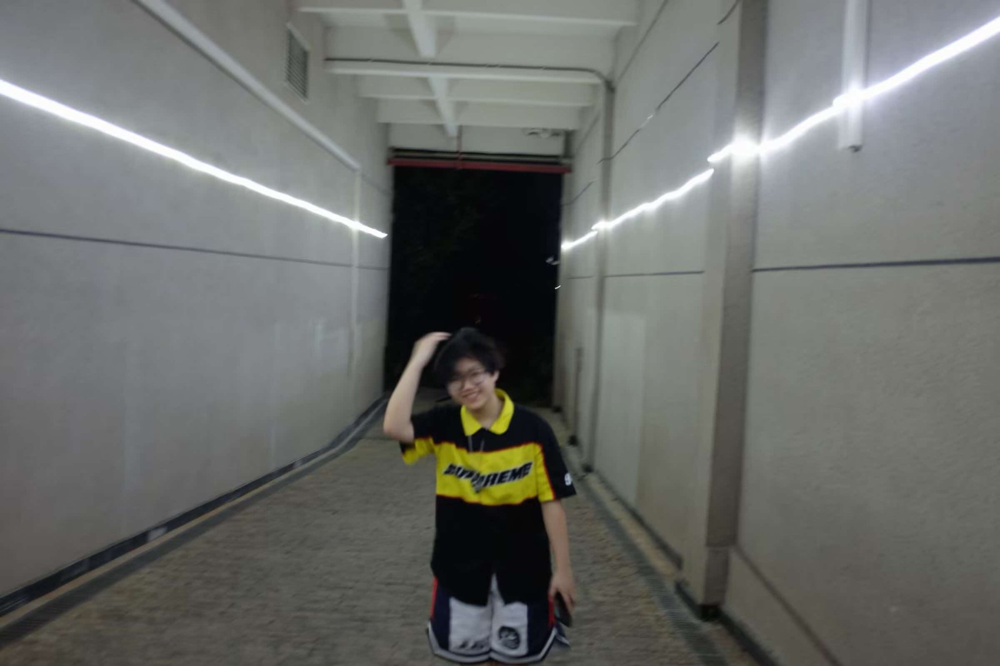
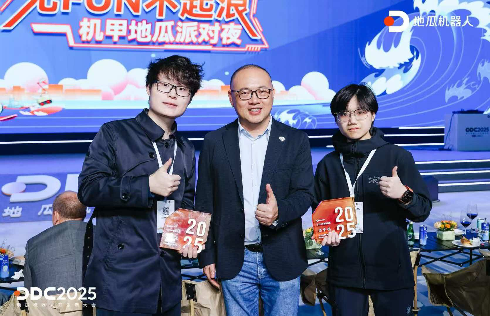
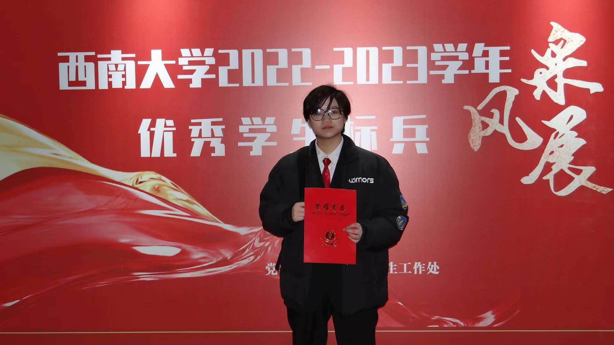
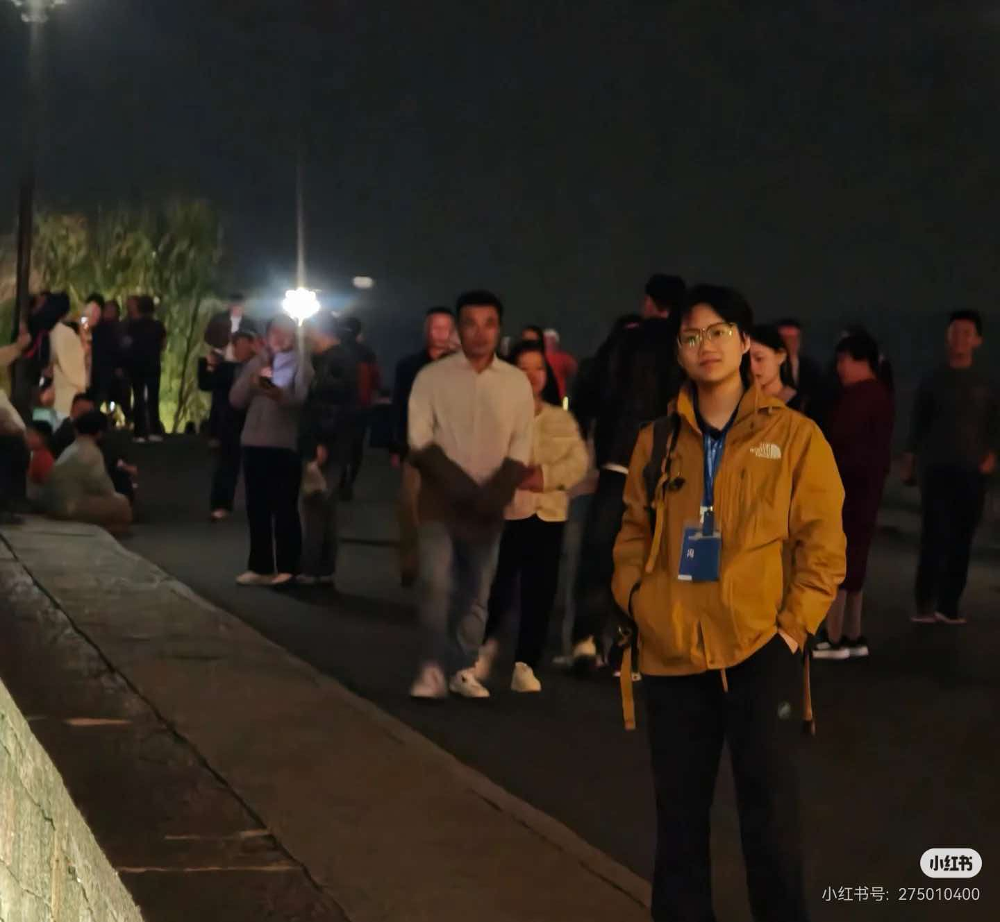

ROBOT LEARNING & MANIPULATION
Ziyan Feng Shay
MPhil Researcher · HKUST (Guangzhou)
I study physical intelligence for generalist robot manipulation, connecting tactile sensing, closed-loop control, and robot learning.
Advisors: Prof. Qiang Nie and Prof. Jinni Zhou
Selected Publications
IROS 2026First Author · Accepted
TactileReflex: Noise-Statistics-Driven Vision-Tactile Reflex Control for Force-Sensitive Manipulation
Ziyan Feng, Yulong Fu, Zheng Li, Yuxin He, Jieji Ren, Yudong Zhong, Lujia Wang, Jinni Zhou, and Qiang Nie
Innovation. Turns intrinsic tactile sensor noise into self-calibrated control thresholds, removing the need for external force calibration, material models, or manual threshold tuning. Three coordinated reflexes address slip, excessive grip, and overload for force-sensitive manipulation.
arXiv ↗
CoRL 2026First Author · Accepted
What is the Better Curriculum: Controller-Shaped Grasping Behavior for Contact Force-Sensitive Manipulation
Ziyan Feng et al.
Innovation. Uses tactile feedback as a teacher during data collection: a high-rate controller shapes demonstrations so ACT and π0.5 can learn safer grasping without tactile inputs at inference. The work connects demonstration quality with learned contact behavior and distinguishes what policies can learn from what still requires real-time feedback.
Applied Soft Computing · 2026Co-first Author
Q. Yang, Ziyan Feng, et al.
Lightweight visual recognition for embedded edge-AI applications. My contributions include edge-computing algorithm design, deployment, and acceleration.
Research Interests
My research lies at the intersection of robot learning, multimodal perception, and physical interaction. I am interested in how vision-language-action models, tactile sensing, and reinforcement learning can help robots understand tasks and manipulate objects reliably in the real world.
I am particularly interested in contact-rich and force-sensitive manipulation, the role of sensory feedback in learning and control, and generalization across objects and environments. My work combines learning-based methods with closed-loop control, with an emphasis on real-robot validation and robust physical behavior.
Selected Experience
RIL-LAB · HKUST(GZ)
Sep. 2025 – Present
Research on tactile sensing and robot learning for real-world manipulation.
Motphys · Robotics RL Intern
Jul. 2026 – Present
Research on tactile simulation and robot learning.
ICRA 2026 ManipDojo Challenge 1st Place
2026
Developed a multi-task robot manipulation system using reinforcement learning.
Tsinghua AIR × D-Robotics Champion
Jan. – Mar. 2025
Desktop Robot Track champion, Embodied AI Program.
Education
The Hong Kong University of Science and Technology (Guangzhou)
Aug. 2025 – Present
MPhil in Robotics and Autonomous Systems
Southwest University
Sep. 2021 – Jun. 2025
B.Eng. in Automation
First-Class Scholarship · Outstanding Graduate · Innovation Award






